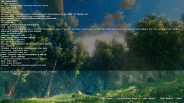

开发者控制台
本站支持中英文站内搜索。带 ↗ 的链接指向外部网站；各页来源版本见页脚。


开发者控制台，简称控制台，是输入文本命令的游戏内界面，用于调试、作弊和服务器管理。
启用控制台
使用控制台命令前，必须启用控制台。不同游戏版本有不同方法，也可在设置中启用。
Steam
- 在Steam游戏库中右键点击英灵神殿。
- 选择属性.
- 在“常规”选项卡中找到“启动选项”字段。
- 在其中输入“-console”。
- 关闭 该窗口。
- 在游戏中按F5打开控制台窗口。
PC Game Pass
- 进入游戏安装文件夹，通常为C:\XboxGames\Valheim\Content。
- 在该文件夹中,查找 Valheim.exe.
- 右键点击Valheim.exe，选择“创建快捷方式”。
- 将快捷方式拖到桌面或其他所需位置。
- 右键点击快捷方式，选择“属性”。
- 在快捷方式选项卡的目标字段末尾添加“-console”。
- 点击应用,然后单击“确定”。
- 通过该快捷方式启动游戏。
- 在游戏中按F5打开控制台窗口。
Xbox Game Pass
- 在游戏中同时按住LB + RB + MENU。
- 按A调出键盘。
macOS（App Store）
- 用TextEdit或类似编辑器创建文本文件，命名valheim.sh，放在系统合适位置。
- 打开文件，输入：#!bin/bash /Applications/Valheim.app/Contents/MacOS/Valheim -console。
- 运行valheim.sh，以启用控制台的方式启动英灵神殿。
- 在游戏中按F5打开控制台窗口
注意：这些说明适用于App Store购买者。通过Steam运行时，使用上面的Steam说明。
GeForce Now
- 在Steam客户端或网站启用家庭共享模式，说明见Steam。不要将英灵神殿加入白名单
- 使用GeForce Now打开英灵神殿。
- 输入步骤1设置的PIN，即可进入GFN中的Steam客户端。
- 按上文Steam版本的说明启用控制台。
- 开始 该游戏。
- 每次会话都需这样操作，因为结束后设置会重置。
命令
玩家命令
玩家命令无需devcommands，可在聊天窗口使用。输入“/”并按Tab显示可用命令。
| 命令 | 效果 | 说明 |
|---|---|---|
| 成就 | 显示玩家成就信息 | - |
| bind [keycode] [command] | 将自定义命令绑定至一个 Unity键码. | 举个例子。 bind mouse4 cheer 按下mouse4时，玩家会执行欢呼动作。可绑定多个命令，包括devcommands。
|
| clear | 清空控制台窗口。 | - |
| clearpopups | 停止当前所有解锁界面提示 | - |
| cr | 卸载未使用的资源 | 默认每20分钟执行一次，此命令会强制立即重新卸载。 |
| 死亡 | 使角色死亡 | - |
| exclusivefullscreen | 将窗口模式切换为独占全屏，或切回无边框模式 | - |
| ffsmooth | 自由飞行平滑度 | - |
| freefly | 自由飞行拍照（相机）模式 | - |
| filtercraft [name] | 按文本片段筛选制作列表 | - |
| fov [number] | 更改视野角度 | |
| getstat | 获取指定统计数据 | - |
| hidebetatext | 切换 beta 文本可见度 。 | - |
| help [page] [pages = 5] | 显示该可用命令。 | 可选参数可用于仅显示部分命令。例如，“help 2 4”显示第二个四分之一部分。 |
| info | 输出当前系统信息 | - |
| inventoryclean | 丢弃背包中处于无效位置的所有物品 | - |
| lodbias [number] | 设置服务器的绘制距离。 | 数值可设为1至7。 |
| maxfps [FPS] | 设置帧率上限 | |
| nomap | 切换地图可见度。 | 若在服务器端执行，还会切换nomap设置 全局键. |
| noportals | 切换传送门. | 若在服务器端执行，会切换noportals设置 全局键. |
| optterrain | 将附近区域中旧版地形修改（更新0.150.3之前）全部转换为新系统。 | - |
| ping | 向服务器发送探测请求以测量延迟。 | - |
| printbinds | 输出当前自定义命令绑定。 | - |
| printseeds | 输出附近地牢的种子和位置。 | - |
| resetbinds | 删除全部 自定义命令绑定。 | - |
| resetknownitems | 重置角色已知的物品和配方 | - |
| resetplayerprefs | 重置保存的设置和变量（不会重置游戏存档） | - |
| resetsharedmap | 从制图桌移除共享地图数据。 | - |
| resetspawn | 重置出生位置。 | - |
| resetworldkeys [name] | 将所有世界修改器恢复默认值 | - |
| respawn | 使角色死亡。 | - |
| restartparty | 重启PlayFab Party网络。 | - |
| s | 以喊话形式发送聊天消息。 | - |
| say | 发送聊天消息。 | - |
| setworldmodifier [name] [value] | 设置世界修改器的值 | - |
| setworldpreset [name] | 将所有世界修改器重置为指定名称的预设 | - |
| sortcraft [type] | 按设置对制作列表排序 | - |
| tutorialreset | 重置已看过的教程消息。 | - |
| tutorialtoggle | 切换是否显示教程。 | - |
| unbind [keycode] | 清除指定Unity键码上的所有自定义命令绑定。 | - |
| W [player name] | 向玩家发送私聊消息。 | - |
| xb:version | 输出此构建所用的Mercurial哈希集合 | - |
表情
表情动作命令无需devcommands，可在聊天窗口使用。


管理员命令
各种管理员工具。仅当玩家的SteamID64或跨平台玩家ID位于管理员列表中时可用。
| 命令 | 效果 | 说明 |
|---|---|---|
| ban [name/ip/userID] | 封禁指定用户。 | - |
| banned | 显示所有被封禁用户的完整列表。 | - |
| kick [name/ip/userID] | 踢出指定用户。 | - |
| resetworldkeys | 将所有世界修改器恢复默认值。 | 这不会重置游戏进度键。 |
| save | 强制游戏保存。 | - |
| setworldmodifier [name] [value] | 设置世界修改器滑块的值 | - |
| setworldpreset [name] | 将所有世界修改器重置为指定名称的预设。 | - |
| unban [name/ip/userID] | 解除指定用户的封禁。 | - |
作弊命令
输入devcommands并回车启用作弊命令，输入devcommands并再次回车关闭。作弊命令仅适用于单人或手动托管模式，无法在专用服务器上使用。
| 命令 | 效果 | 说明 |
|---|---|---|
| addstatus [name] | 添加一个 状态效果. | 例如：Rested（休息充分）、Burning（燃烧）、SoftDeath（软死亡）、Wet（潮湿）等。 |
| aggravate | 激怒20米范围内的中立生物。 | - |
| altbioms | 列出各生物群系及其修正项 | - |
| beard [beard#] | 永久改变您的胡须. | 不带参数执行此命令会移除胡须。 |
| biomeinfo | 显示当前生物群系区块的信息 | - |
| clearstatus | 删除任何 状态效果 （有益和有害）。 | - |
| cinematic | [name] 播放过场动画 | - |
| dpsdebug | 切换每秒伤害调试信息的输出。 | - |
| env [env] | 设置调试环境。 | 变量：Clear, Twilight_Clear, Misty, Darklands_dark, Heath clear, DeepForest Mist, GDKing, Rain, LightRain, ThunderStorm, Eikthyr, GoblinKing, nofogts, SwampRain, Bonemass, Snow, Twilight_Snow, Twilight_SnowStorm, SnowStorm, Moder, Ashrain, Crypt, SunkenCrypt。 |
| exploremap | 显示整张地图。 | - |
| event [name] | 启动指定名称的 事件. | - |
| ffsmooth 1 | 为自由摄像机添加平滑移动。 | “ffsmooth 0”会将平滑移动重置为普通移动。 |
| forcedelete [radius=5] [*name] | 移除指定半径内的物体（最大50米）。 | 若指定ID，则只移除ID中包含该名称的物体。以下物体永远不会被移除：玩家、墓碑、女武神、 兴趣点 （地点）、地牢及其房间、指引石、初始神庙中的首领石碑。 |
| find [text] [pingmax] | 寻找匹配物体，并在地图上标示其位置。 | Pingmax默认为1；若更大，则改为在地图上放置标记。 |
| findtp [text] | 寻找匹配物体，并将玩家传送至最近的匹配项。 | - |
| findbiome | 在地图上标记所有类型或所含修正项匹配搜索字符串的生物群系的中心 | - |
| findbiometp | 查找最近的匹配搜索条件的生物群系，并传送至该处 | - |
| fly | 切换该飞行模式。 | 与调试模式相同：启用调试后按Z。 |
| gc | 显示垃圾收集信息. | - |
| genloc | 重新分配所有尚未放置的地点。 | - |
| ghost | 切换幽灵模式（开启时敌人会忽略玩家）。 | - |
| god | 启用无敌模式（开启时玩家不会受到伤害）。 | 即使伤害超过剩余生命值，也会使玩家生命值保持在1。 |
| goto [x] [z] | 将玩家传送至指定坐标。 | - |
| hair [hair#] | 永久改变您的头发. | 不带参数执行此命令会移除头发。 |
| haslocation | 检查区域内是否存在地点 | - |
| height | 输出世界生成器中当前位置的高度 | - |
| heal | 将玩家的生命值、耐力和埃达之能恢复至满值。 | - |
| itemset [name] [keep] | 生成预设物品套装。 | 未指定keep标志时，会丢弃当前物品。
|
| inventorysize | 设置背包大小（默认 4，最大 9） | - |
| killall | 杀死附近敌人和已驯服生物。 | 不会杀死玩家。 |
| killenemies | 杀死附近的敌人。 | 与调试模式相同：启用调试后按K。 |
| killtame | 杀死附近已驯服生物。 | - |
| listkeys | 列出所有全局键。 | - |
| location [name] | 生成一个地点实例。 | 永久禁用保存 。 |
| location [name] SAVE | 生成一个地点实例。 | 不会禁用保存。 |
| model [0-1] | 将角色模型从男性切换为女性。 | - |
| nextseed | 强制下一个地牢使用指定种子（重新生成）。 | 永久禁用保存 。 |
| nocost | 切换该无成本模式 。 | 与调试模式相同：启用调试后按B。 |
| pevents | 子命令：[list/start/stop/here]，用于极北之境的新事件 | - |
| players [number] | 调整该难度尺度 。 | 输入0重置难度。 |
| pos | 显示玩家坐标。 | - |
| printcreatures | 输出活跃生物的数量和等级。 | - |
| printlocations | 输出已加载地点及其与玩家之间的距离和偏移。 | - |
| puke | 重置饱食或饥饿状态，使生命值和耐力恢复默认值。 | - |
| raiseskill [skill] [amount] | 提高或降低指定名称的 技能 ，增加量为输入的数值。 | 以All替代[skill]时，所有技能均增加输入的数值。要降低技能，在数值前输入负号。 |
| randomevent | 随机启动 事件. | - |
| recall [name] | 将所有名称匹配的玩家传送到你的位置。 | 不指定名称时，传送所有玩家。 |
| removebirds | 移除所有活跃鸟类。 | - |
| removedrops | 移除区域内所有掉落物。 | 与调试模式相同：启用调试后按L。 |
| removefish | 移除所有活跃鱼类。 | - |
| removekey [name] | 移除一个 全局键. | - |
| repairall | 修理所有装备 | |
| resetcharacter | 重置角色的全部数据。 | - |
| resetenv | 重置调试环境。 | - |
| resetkeys [name] | 删除全部 世界进度标记. | [name]参数没有作用。 |
| resetmap | 隐藏整个地图. | - |
| resetskill [skill] | 将指定技能等级设为0。 | 以All替代[skill]时，所有技能均重置为0级。 |
| resetwind | 重置风向和风力。 | - |
| save | 强制游戏保存当前世界状态。 | - |
| setfuel [value] | 为附近所有火源添加指定数量的燃料 | 默认为10，不会超过容量。负值会减少火源燃料，最低降至零。 |
| setkey [name] | 添加一个 全局键. | - |
| setpower [name] | 设置当前的 遗弃者能力 并重置冷却时间 | 例如:GP_Eikthyr,GP_TheElder等. |
| skiptime [seconds = 240] | 向前跳过时间，改变天数和一天中的时刻。 | 此操作不会更新物体的时间戳，因此时间倒退时会产生问题。 |
| 睡觉 | 向前跳过一天。 | - |
| snow | [amount] 增加或减少附近所有建筑部件上的积雪量 | |
| sortcraft | 按名称、类型、重量、数量或原始顺序排列制作列表。 |
|
| spawn [entity name] [amount] [level] | 生成指定实体。 | 见 ItemIDs 以查看可生成实体的列表。
|
| stopevent | 停止当前的 事件. | - |
| tame | 驯服附近所有 可驯服 生物. | - |
| test [value] | 切换测试值。 | oldcomfort：恢复旧版未经优化的舒适度计算方式。 |
| time | 显示当前时间以及是否可以睡觉。 | - |
| timescale [target = 1] [fadetime = 0] | 设置时间流速。 | 最高为5倍速。Fadetime设置过渡持续时间。
|
| tod [0-1] | 设置一天中的时刻。 | 0和1均为午夜，0.5为正午，-1恢复默认值。 |
| updatecover | 强制刷新遮蔽状态 | |
| wind [angle] [intensity] | 调整风向和风力。 | 效果持续至使用 resetwind
|
调试模式
调试模式提供飞行切换、无需工作台或资源建造等更多作弊功能。在控制台输入devcommands回车，再执行debugmode回车即可进入；再次执行退出。
| 钥匙 | 行动 |
|---|---|
| B | 切换创造建造模式，无需工作台或资源。 |
| K | 杀死附近敌人（不包括已驯服生物）。 |
| L | 移除附近掉落物。 |
| Z | 切换飞行。空格键上升，Ctrl键下降。 |
| Ctrl + 鼠标中键（地图上） | 传送到光标位置. |
| Shift + C | 将时间设为白天。 |
| 攻略 | |
|---|---|
| 玩家 | |
| 战斗 | |
| 生成 | |
| 建材 | |
| 界面 | |
| 世界 | |
| 杂项 | |
| 开发 | |
The developer console, or just console, is an in-game interface for entering text-based commands used for debugging, cheating and server administration.
Enabling the console
To be able to use console commands, the console has to be enabled. There are multiple different ways depending on the game's version. Additionally, you may enable it in settings.
Steam
- Right-click Valheim in the Steam library.
- Select Properties.
- In the General tab, look for the Launch Options field.
- In it, type "-console".
- Close the window.
- Press F5 in-game to open the console window.
PC Game Pass
- Navigate to the game's installation folder. Typically, it is C:\XboxGames\Valheim\Content.
- In that folder, find Valheim.exe.
- Right-click Valheim.exe and select Create shortcut.
- Drag the shortcut to the desktop or preferred location.
- Right-click the shortcut and select Properties.
- In the Shortcut tab, add "-console" to the end of the Target field.
- Click Apply, then click OK.
- Launch the game from the shortcut.
- Press F5 in-game to open the console window.
Xbox Game Pass
- While in game hold: LB + RB + MENU.
- Press A to bring up the keyboard.
MacOS (App Store)
- Create a text file in TextEdit (or similar) and name it valheim.sh in a suitable place in your system
- Open the file and enter the following text:
#!bin/bash /Applications/Valheim.app/Contents/MacOS/Valheim -console - Run the valheim.sh file to open Valheim with the console enabled.
- Use F5 in-game to open the console window
Note: These instructions are for users who purchased Valheim through the AppStore. If running Valheim through Steam, use the Steam instructions above.
GeForce Now
- Enable family sharing mode in Steam either via the client or the website (instructions via Steam). Do not add Valheim to the whitelist.
- Open Valheim using GeForce Now.
- Enter the PIN you set up in step 1, this will take you to the Steam client within GFN.
- Enable the console using the instructions for Steam above.
- Start the game.
- This will need doing every session as your settings will be reset when the session ends.
Commands
Player commands
Player commands do not require devcommands and can be used from the chat window. Typing "/" and clicking tab shows available commands.
| Command | Effect | Note |
|---|---|---|
| achievements | show player achievement info | - |
| bind [keycode] [command] | Binds a custom command to a Unity keycode. | E.g. bind mouse4 cheer will cause the player to perform the cheer emote upon pressing mouse4. Can bind multiple commands, including devcommands.
|
| clear | Clears the console window. | - |
| clearpopups | stops all current unlock ui messages | - |
| cr | Unloads unused assets | Happens by default every 20 minutes, but this commands forces a fresh unload. |
| die | kill yourself | - |
| exclusivefullscreen | changes window mode to exclusive fullscreen, or back to borderless | - |
| ffsmooth | freefly smoothness | - |
| freefly | freefly photo(camera) mode | - |
| filtercraft [name] | filters crafting list to contain part of text | - |
| fov [number] | Changes field of view | |
| getstat | get specific stat | - |
| hidebetatext | Toggles beta text visibility. | - |
| help [page] [pages = 5] | Shows the available commands. | Optional parameters allow showing only some part of the commands. For example, "help 2 4" shows the second quarter. |
| info | Prints the current system information | - |
| inventoryclean | throws out any items in inventory on invalid positions | - |
| lodbias [number] | Sets the draw distance for the server. | The number can be set from 1 to 7. |
| maxfps [FPS] | sets fps limit | |
| nomap | Toggles map visibility. | If the server, also toggles the nomap global key. |
| noportals | Toggles portals. | If the server, toggles the noportals global key. |
| optterrain | Converts all the old terrain modifications (before Update 0.150.3) in the nearby area to the new system. | - |
| ping | Pings the server to measure latency. | - |
| printbinds | Prints current custom command binds. | - |
| printseeds | Prints seeds and positions of nearby dungeons. | - |
| resetbinds | Removes all custom commands binds. | - |
| resetknownitems | reset character known items & recipes | - |
| resetplayerprefs | Resets any saved settings and variables (not the save game) | - |
| resetsharedmap | Removes shared map data from cartography table. | - |
| resetspawn | Resets the spawn location. | - |
| resetworldkeys [name] | Resets all world modifiers to default | - |
| respawn | Kills the character. | - |
| restartparty | Restarts the playfab party network. | - |
| s | Shouts a chat message. | - |
| say | Says a chat message. | - |
| setworldmodifier [name] [value] | Sets a world modifier value | - |
| setworldpreset [name] | Resets all world modifiers to a named preset | - |
| sortcraft [type] | sorts crafting lists according to setting | - |
| tutorialreset | Resets viewed tutorial messages. | - |
| tutorialtoggle | Toggles whether the tutorials are shown. | - |
| unbind [keycode] | Clears all custom command binds from a Unity keycode. | - |
| W [player name] | Whispers a chat message to a player. | - |
| xb:version | Prints mercurial hashset used for this build | - |
Emotes
Emote commands do not require devcommands and can be used from the chat window.
Admin commands
Various admin utilities. Only available when player's SteamID64 or Crossplay player ID is in the admin list.
| Command | Effect | Note |
|---|---|---|
| ban [name/ip/userID] | Bans the named user. | - |
| banned | Shows a full list of banned users. | - |
| kick [name/ip/userID] | Kicks the named user. | - |
| resetworldkeys | Resets all world modifiers to default. | This does not reset gameplay progression keys. |
| save | Forces the game to save. | - |
| setworldmodifier [name] [value] | Sets a world modifier slider value | - |
| setworldpreset [name] | Resets all world modifiers to a named preset. | - |
| unban [name/ip/userID] | Unbans the named user. | - |
Cheat commands
To activate cheat commands, type devcommands and press enter. To deactivate cheat commands, type devcommands and press enter again. The cheat commands are available in singleplayer or manually hosted mode only. They do not work on a dedicated server.
| Command | Effect | Note |
|---|---|---|
| addstatus [name] | Adds a status effect. | For example: Rested, Burning, SoftDeath, Wet, etc. |
| aggravate | Aggravates neutrals within 20 meters. | - |
| altbioms | list of biomes with modifiers | - |
| beard [beard#] | Permanently changes your beard. | Entering this command without an argument removes your beard. |
| biomeinfo | info about current biome sector | - |
| clearstatus | Removes any status effects (good and bad). | - |
| cinematic | [name] play cinematic | - |
| dpsdebug | Toggles dps debug print on and off. | - |
| env [env] | Sets debug environment. | Variables: Clear, Twilight_Clear, Misty, Darklands_dark, Heath clear, DeepForest Mist, GDKing, Rain, LightRain, ThunderStorm, Eikthyr, GoblinKing, nofogts, SwampRain, Bonemass, Snow, Twilight_Snow, Twilight_SnowStorm, SnowStorm, Moder, Ashrain, Crypt, SunkenCrypt. |
| exploremap | Reveals the entire map. | - |
| event [name] | Starts the named event. | - |
| ffsmooth 1 | Adds smooth movements to free camera. | "ffsmooth 0" will reset smooth movements to normal. |
| forcedelete [radius=5] [*name] | Removes objects within given radius (up to 50 meters). | If ID is given, only objects that contain the name on their ID. Following objects are never removed: Players and tombstones, Valkyrie, Points of Interests (locations), Dungeons and their rooms, Vegvisirs, Boss stones at the start temple. |
| find [text] [pingmax] | Finds matching objects and pings them on the map. | Pingmax defaults to 1; If greater, will place pins on the map instead. |
| findtp [text] | Finds matching objects and teleports the player to the nearest match. | - |
| findbiome | marks center of all biomes on map of type or containing modifier with search string | - |
| findbiometp | finds the closest biome matching your search and teleports you to it | - |
| fly | Toggles the fly mode. | Same as in the debug mode, Press 'Z' with Debug on. |
| gc | Shows garbage collection information. | - |
| genloc | Redistributes all unplaced locations. | - |
| ghost | Toggles ghost mode (enemies ignore user if true). | - |
| god | Enables god mode. (Makes user invicible if true). | Keeps users' health at '1' even if damage would exceed remaining health. |
| goto [x] [z] | Teleports player to the specified coordinates. | - |
| hair [hair#] | Permanently changes your hair. | Entering this command without an argument removes your hair. |
| haslocation | check if zone has location | - |
| height | print height from worldgen at current position | - |
| heal | Regenerates user to full health, stamina, and eitr. | - |
| itemset [name] [keep] | Spawns a premade item set. | Without "keep" flag, current items will be dropped.
|
| inventorysize | sets inventory size(default 4, max 9) | - |
| killall | Kills nearby enemies and tamed creatures. | Does not kill players. |
| killenemies | Kills nearby enemies. | Same as in the debug mode, Press 'K' with Debug on. |
| killtame | Kills nearby tamed creatures. | - |
| listkeys | Lists all global keys. | - |
| location [name] | Spawns a location instance. | Permanently disables saving. |
| location [name] SAVE | Spawns a location instance. | Saving is not disabled. |
| model [0-1] | Switches character model from masculine to feminine. | - |
| nextseed | Forces the next dungeon to a seed (regenerates it). | Permanently disables saving. |
| nocost | Toggles the no cost mode. | Same as in the debug mode, Press 'B' with Debug on. |
| pevents | subcommands: [list/start/stop/here] used for the new event from deep north | - |
| players [number] | Adjusts the difficulty scale. | Enter 0 to reset difficulty. |
| pos | Shows player coordinates. | - |
| printcreatures | Prints the counts and levels of active creatures. | - |
| printlocations | Prints the loaded locations and their distances and offsets to the player. | - |
| puke | Resets fullness/hunger, returning you to default Health/Stamina. | - |
| raiseskill [skill] [amount] | Raises (or lowers) the named skill by the value entered. | If 'All' is entered in place of [skill], all skills will increase by the value entered. To lower a skill, type "-" before the value. |
| randomevent | Starts a random event. | - |
| recall [name] | Teleports all players matching the name to your position. | Without name, teleports all players. |
| removebirds | Removes all active birds. | - |
| removedrops | Removes all items drops in the area. | Same as in the debug mode, Press 'L' with Debug on. |
| removefish | Removes all active fish. | - |
| removekey [name] | Removes a global key. | - |
| repairall | repairs all equipment | |
| resetcharacter | Resets all of your character data. | - |
| resetenv | Resets the debug environment. | - |
| resetkeys [name] | Removes all Global Keys. | [name] parameter does not do anything. |
| resetmap | Hides entire map. | - |
| resetskill [skill] | Sets specified skill level to 0. | If 'All' is entered in place of [skill], all skills will be reset to level 0. |
| resetwind | Resets the wind angle and intensity. | - |
| save | Forces the game to save the current world state. | - |
| setfuel [value] | Adds value amount of fuel to all nearby fire sources | Default is 10, does not overfill. Negative values will reduce the level of fuel in fire sources down to zero. |
| setkey [name] | Adds a global key. | - |
| setpower [name] | Sets the current Forsaken power and resets the cooldown | For example: GP_Eikthyr, GP_TheElder, etc. |
| skiptime [seconds = 240] | Skips forward, changing day number and time of day. | This does not update timestamps of objects which causes issues when going back in the time.
|
| sleep | Skips forward one day. | - |
| snow | [amount] adds/removes amount of snowbuild on all nearby build pieces | |
| sortcraft | Sorts crafting list by Name, Type, Weight, Count or Original. |
|
| spawn [entity name] [amount] [level] | Spawns specified entity. | See ItemIDs for a list of spawnable entities.
|
| stopevent | Stops the current event. | - |
| tame | Tames all nearby tameable Creatures. | - |
| test [value] | Toggles a test value. | "oldcomfort" Reverts to old non-optimized comfort calculation. |
| time | Shows the current time and whether sleeping is possible. | - |
| timescale [target = 1] [fadetime = 0] | Sets the speed of time. | Up to 5x speed. Fadetime sets the transition duration.
|
| tod [0-1] | Sets time of day. | 0 and 1 are both midnight. 0.5 is noon. -1 revert to default. |
| updatecover | force update cover refresh | |
| wind [angle] [intensity] | Adjusts the direction and intensity of the wind. | Lasts until you use resetwind
|
Debug mode
The debug mode can be entered to access more cheats, such as toggle fly or building without a workbench or resources. It can be entered by typing devcommands and pressing enter, then executing the command debugmode and pressing enter in the console. Executing it again will exit the debug mode.
| Key | Action |
|---|---|
| B | Toggle for creative mode building, no workbench or resources needed. |
| K | Kills nearby enemies (excluding tamed creatures). |
| L | Removes nearby item drops. |
| Z | Toggle to fly. Spacebar gives you altitude, Ctrl brings you back down. |
| Ctrl + MMB (on map) | Teleport to cursor location. |
| Shift + C | Set time to day. |
| Guides | |
|---|---|
| Player | Player • Health • Stamina • Eitr • Adrenaline • Death • Forsaken power • Skills • Status effects • Movement speed • Magic • Fishing • Riding • Sleeping • Emotes |
| Combat | |
| Spawning | |
| Building | |
| UI | |
| World | |
| Misc | |
| Development | |